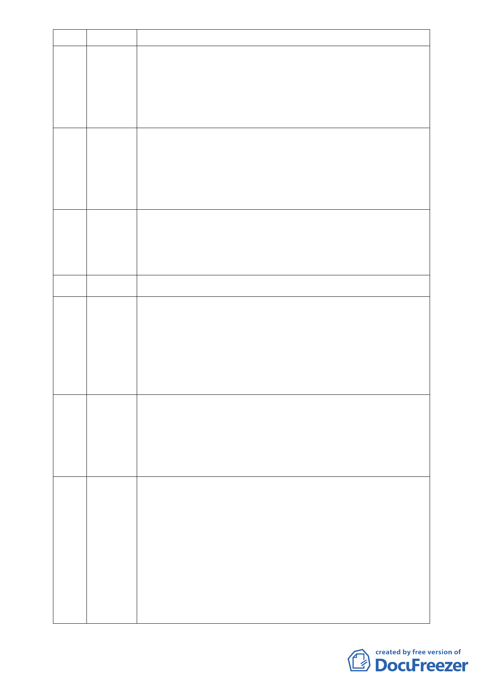

勿破壞環境，請留給後代子孫一個乾淨祥和的環境。
21 王美娥 大家的共同疑惑是園區旁蓋了好幾十層樓的大樓，後面是山莊，旁
邊也蓋了康福路，也開山洞又開山路，竟然通過了環評，剛剛所述
順向坡、斷層等，表示其安全是無慮的，又為何山上可以開隧道，
平地卻又不可以開發，就小市民而言，內湖需要慈濟，慈濟又需要
ㄧ安全不漏水的地方，故個人贊成支持此開發案來造福內湖居民。
22 陳淑穗 現在社會上最多的是罹患憂鬱症，社區中有婦女遭受家暴，半年前
經過慈濟心靈的醫療又重回職場，走入人群。也有對母女經過環保
隊的洗禮，心靈得到平息不再爭吵。等各位在座年老時也可以到此
得到心靈的良和，故懇請委員能通過本案，讓此地能發揮更大的效
能。
23 杜麗枝 個人從 96 年開始帶了 10 幾位精神病患到慈濟做環保踩保特瓶，透
過腳底按摩去年開始已有人慢慢康復，回歸社區工作，家屬也多予
肯定。其中獲益都是內湖慈濟園區的包容。請大家支持此志工大樓
的興建案。
24 陳慧玲 （刪除登記）
25 吳月鶯 個人居民內湖葫洲里 30 幾年，人生最大的意義就是前往慈濟陪著一
群 7、80 歲的長者做志工，所整理的毛毯圍巾就是發送到全世界有
災難的地方，甚至是獨居老人或遊民的手上。很多人在問為何旁邊
山上可以蓋大樓，我們這塊平地卻不能蓋，很多國外友人到此也都
很納悶。志工們在鐵皮屋內夏天很熱冬天又寒風刺骨，希望委員能
讓本案即早通過，對社區也是公德一件。
26 詹和榮 跟本案最有關係的是周圍里民，請委員多聆聽在地居民的聲音。慈
濟周遭 90％都是山林，不缺少森林，環保團體所稱要給你森林實屬
渺茫。此地 25 年前即為公車總站，一片髒亂夜晚讓人不敢前往，慈
濟到了以後將它整理的很好，晚上還可以去散步。希望環保團體不
要唱高調才好。
27 郭碧霞 本人為土生土長的內湖人，順向坡問題為何旁邊可以蓋大樓，捷運
也可以開通，又為何三個隧道可以開通？說到淹水問題，自從員山
分洪道完成後內湖地區甚至汐止都不再淹水了，眾所周知慈濟是做
好事的團體，又怎麼可能為了蓋志工中心而害了內湖，這是不可能
的事。且設計中也有了大型的滯洪池，大家應該不用擔心。從大愛
電台中得知世界各地有很多國外人士前來參觀，本地若建造一志工
中心亦將成為一有益的國民外交，實不應該予以阻擋才對，目前鐵
皮屋現狀亦常有孩童參觀，若遇倒塌政府是否負責，本人極力贊成
此開發案。
- 15 -